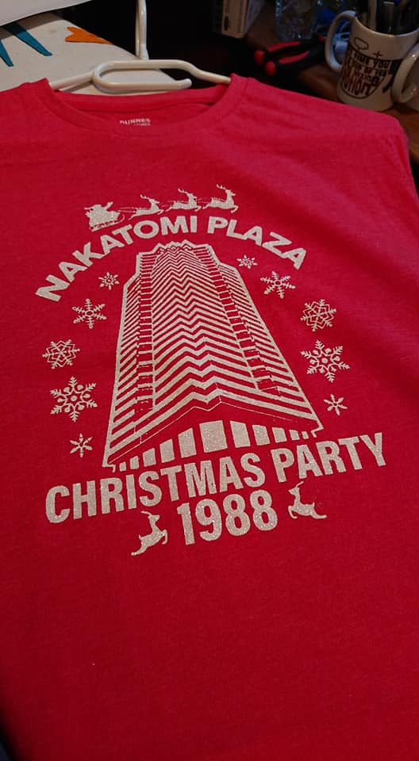
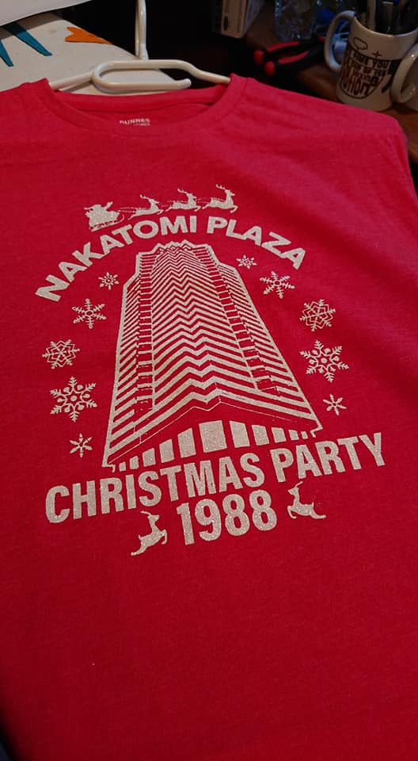

About Johnny:
Johnny is a guy.
Johnny is a guy who wears t-shirts.
One day, Johnny became a guy who makes t-shirts.
Since that day, Johnny has been creating and designing original & personalised t-shirts and accessories. Using the method of screen printing, each product is crafterd by hand in the Johnny the T-Shirt Guy workshop guaranteeing a unique piece with each harvest.
Take a look at one of Johnny's featured designs below and head over to our store to see more products or take a tour of our facilities.


 
